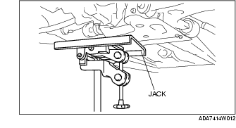

Front crossmember removal/installation
- • Performing the following procedures without first removing the ABS
- wheel-speed sensor may possibly cause an open circuit in the harness if it is pulled by mistake. Before performing the following procedures, remove the ABS wheel-sensor (axle side) and fix it to an appropriate place where the sensor will not be pulled by mistake while servicing the vehicle.
1. Remove the steering gear and linkage, and suspend it. (See STEERING GEAR AND LINKAGE REMOVAL/INSTALLATION.)
2. Remove in the order indicated in the table.
3. Install in the reverse order of removal.
4. Inspect the wheel alignment, and adjust it if necessary. (See FRONT WHEEL ALIGNMENT.)

.
Bolt (No.1 Engine Mount) Removal Note
1. Loosen the transaxle side No.1 engine mount installation bolt.
2. Remove the crossmember side No.1 engine mount installation bolt.
Crossmember Component Removal Note
1. Support the crossmember component using the jack.

- • Removing the crossmember is dangerous.
- The crossmember component could fall and cause serious injury or death. Verify that the jack securely supports the crossmember component.
2. Remove the bolt.
Bolt (No.1 Engine Mount) Installation Note
1. Install the crossmember side No.1 engine mount installation bolt.
2. Tighten the transaxle side No.1 engine mount installation bolt.
Tightening torque